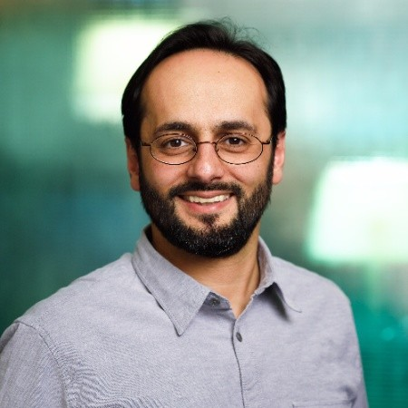
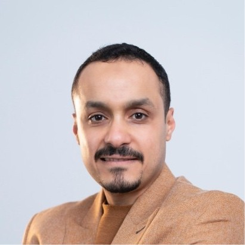
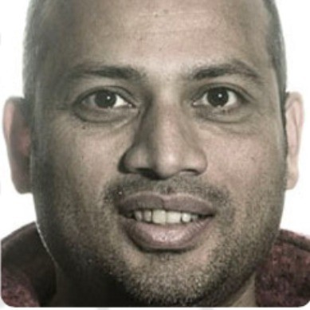

An interactive workshop exploring how autonomous AI systems can transform research across life sciences, agri-food, health, and beyond.
Register Now →About the Workshop
Agentic AI systems can independently perform complex tasks, make decisions, and adapt to changing contexts. You may already be using them — in research assistants like Elicit and Consensus, or in tools like ChatGPT and Claude for deep research and data analysis. This workshop brings together researchers and practitioners from across disciplines to collectively explore what this means for science and society.
Establish a shared understanding of agentic AI concepts, architectures, and current capabilities across life sciences domains.
Identify concrete opportunities and barriers to integrating agentic AI into research workflows, from data analysis to academic writing.
Explore domain-specific use cases — greenhouse horticulture, bioinformatics, digital health, agri-food — and what responsible deployment looks like.
Co-create a shared research agenda that bridges academia and industry.
Emerging Themes
Programme
A carefully balanced mix of expert talks and hands-on interactive sessions, designed so that the majority of time is spent doing, not just listening.
Confirmed Speakers
Six confirmed experts spanning academia and industry. Click any speaker to read their bio and talk abstract.


